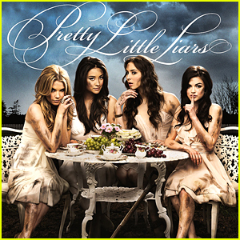
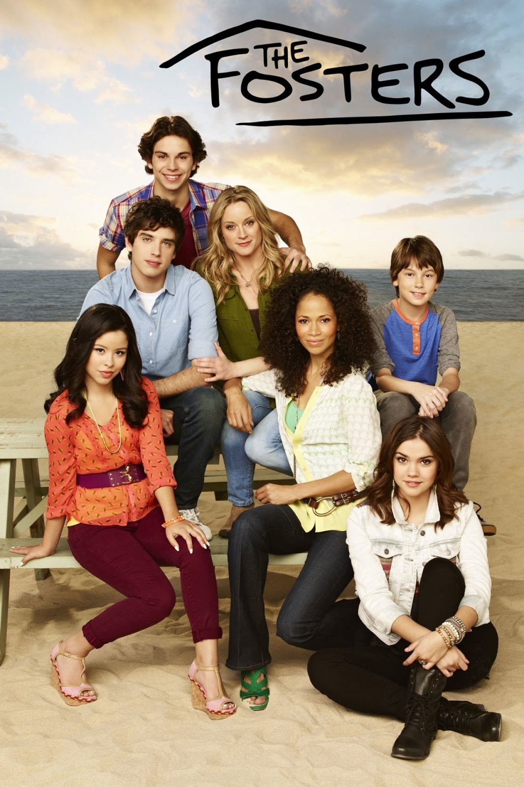

My Favorite Tv Shows
Pretty Little Liars
Pretty Little Liars is my favorite show. It's about four girls who gte their lives turned around by an evil figure. Aria was dating a guy who turned out ot be her English teacher. Hanna became the new "it" girl after losing weight. Spencer is the msart one but loves to take her older sister's boyfirends away from her. Emily is on the swim team and also likes the new girl on the block. They have to find this villan before she exposes them all. After finding out who is the villan they have to decide whether to let her out of jail or not. Before the court could decide the villan is murdered. I love this show because of all the suspense and all the drama that comes with it.
Grey's Anatomy

Grey's Anatomy is another one of my favorite shows. It's about nurses and interns trying to become the best doctors they possibly could. They have to deal with massive accidents and what life has to throw at them. This show has a lot of drama and funny charcters. Some of the characters are Meredith Grey, Derek Shephard, Mark Sloan, Alex Karev, Miranda Bailey, Cristina Yang and many more. Meredith Grey has to face some hardships like her husband, Derek Shepards death. She is not okay and she needs her friend Cristina but she is on the other side of the world.
The Fosters
The Fosters is about 2 women who want to have a family. They decided to adopt 5 kids. Their names are Callie, Mariana, Jude, Jesus and Brandon. Mariana and Jesus are twins and Callie and Jude are brothers and sisters. Callie is secretly in love with Brandon and he is secretly in love with Callie but they can't have a relationship. Callie was taken out of juvie and is taken into the house of the Fosters. After getting out of juvie Callie goes to her old foster dad's house to get her little brother,Jude. Brandon decides to tag along and they both almost get shot. Mariana got in touch with her birth mother and she is trying ot find her. Jesus is trying to manage his ADHD while trying to get on the wrestling team.
Modern Family

Modern Family is about a father who raised 2 kids named Claire and Mitchell. He gets married to a gorgeous young wife, Gloria, who has a son, Manny. Claire marries, Phil and they are proud parents of 3 kids with whom they want a healthy relationshipo with. It's not awlays easy when Haley, a teenager is growing up too fast. Alex, is a too-smart-for-her-own-good middle daughter and Luke, is the boy who does anything to get in trouble. Claire's brother, MItchell is busy with his lawyer job and trying to raise an adopted daughter,Lily. Cameron, is Mitchell's husband and he is the opposite of Mitchell. Cameron has a big personality and over dramatic. These families come together and become a modern family.